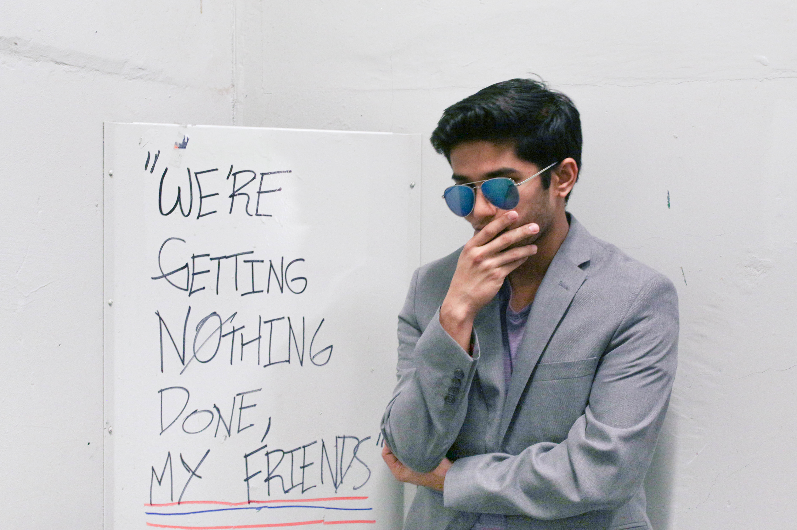

Who is Sahil Sanghvi?

quick facts
| Feature | Observation |
| Current Position | Senior Security Engineer at Microsoft Azure Security |
| Education | University of California, Berkeley |
| Major | Data Science » Concentration in Geospatial Information & Techology |
| Minor | Electrical Engineering & Computer Science |
| Patent(s?) | US Patent No. 12664278 |
I specialize in applying data science, machine learning, and statistical techniques to large and vague problems in the cybersecurity domain. At Microsoft, I've worked on a mix of security engineering and data science, doing everything from threat modeling and web penetration testing, to scaling security processes with agentic LLMs, and even developing custom ML classifiers for security tasks.
I really enjoy learning - especially about topics in statistics and computer science. Currently, I enjoy reading Anthropic, Microsoft, and Deepmind's research blogs, as well as watching relevant conference talks. The intersection of statistics and computer science conveniently became a major during my third semester at Cal, and thus I declared Data Science. Security was another interest of mine for a long time, and I'm thrilled to be in a position where I can apply my data science background to impactful security problems.
In my personal time, I enjoy reading science fiction, cooking and baking, playing music, and flight simulation.